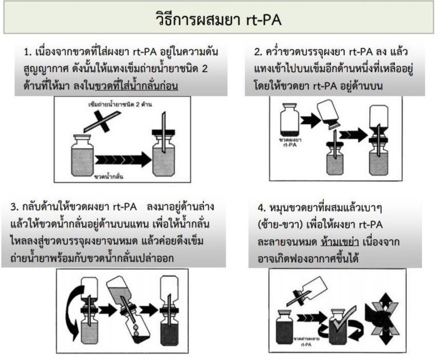
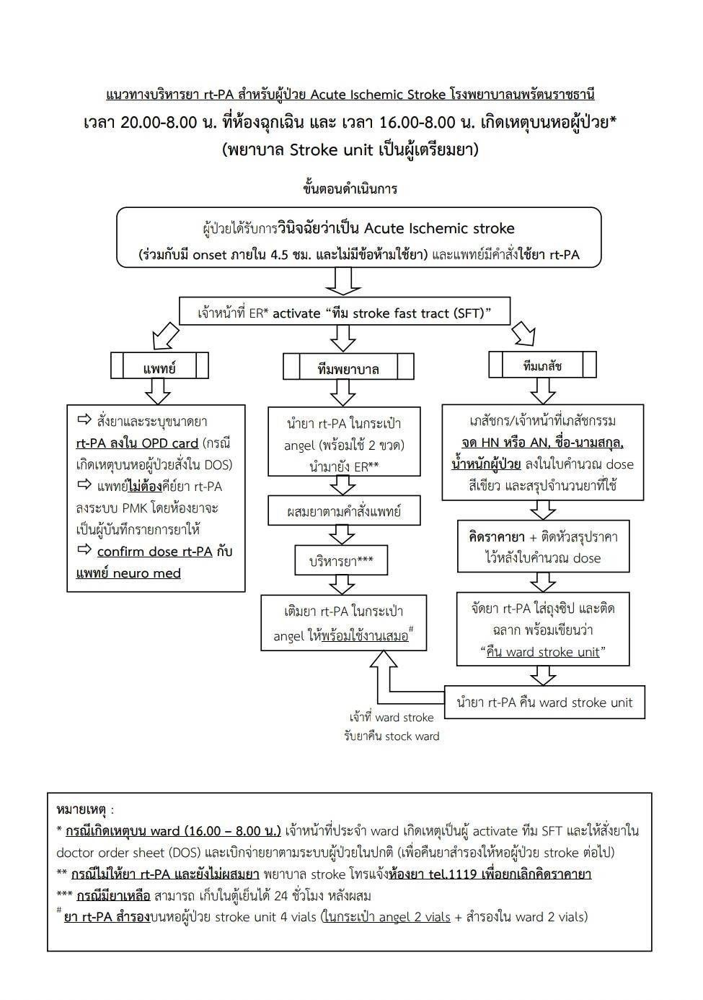

AIS (Acute Ischemic Stroke)
• ปัด mg ทศนิยม 1 ตำแหน่ง • ปัด bolus ก่อน • Actilyse 50 mg/50 mL”
วิธีการผสม/เตรียมยา rt‑PA (Hospital)

- หลีกเลี่ยงการเขย่ารุนแรง — กลิ้งขวดเบา ๆ ให้ยาละลาย
- เตรียมเป็นความเข้มข้น 1 mg/mL (Actilyse 50 mg → เติม SWFI จนครบ 50 mL)
แนวทางการทำงานของ รพ.นพรัตนราชธานี (Stroke fast track)

References (AIS)
- AHA/ASA 2019. Guidelines for the Early Management of Acute Ischemic Stroke: 2019 Update to the 2018 Guidelines. Stroke 2019.
- FDA Activase® (alteplase) Prescribing Information. 0.9 mg/kg (สูงสุด 90 mg); 10% bolus + 90% infusion / 60 นาที.
- Yamaguchi T, et al. J-ACT. Thrombolysis with 0.6 mg/kg alteplase. Stroke 2006;37:1810-1815 — ใช้ 0.6 mg/kg (max 60 mg), bolus 15%.
- Anderson CS, et al. ENCHANTED. Low 0.6 vs standard 0.9 mg/kg. NEJM 2016;374:231-241.
- Thai Stroke Guideline — แนวทางสมาคมโรคหลอดเลือดสมองแห่งประเทศไทย/กรมการแพทย์.
STEMI (Fibrinolysis)
References (STEMI)
- ACC/AHA 2025 ACS Guideline. บทบาท fibrinolysis เมื่อ PCI ล่าช้าหรือไม่พร้อม.
- FDA Activase® label. รายละเอียด accelerated (รวม 100 mg/90 นาที) และ 3-hour (รวม 100 mg/3 ชม.).
- Thai ACS/STEMI Guideline. แนวทางประเทศไทย (สมาคมแพทย์โรคหัวใจฯ/เครือข่าย STEMI).
Pulmonary Embolism (Systemic thrombolysis)
References (PE)
- ESC 2019 Guideline (Acute PE). ชี้บ่งใช้ systemic thrombolysis ใน massive PE/hemodynamic instability.
- AHA Scientific Statements on PE. ลดขนาด 50 mg/2 ชม. อาจพิจารณาในผู้ป่วยเสี่ยงเลือดออกสูง.
- FDA Activase® label. วิธีเตรียมยาและการกลับเข้าสู่ยาต้านการแข็งตัว.
- Thai PE Guidance. แนวทางประเทศไทย.
Cathflo® (alteplase 2 mg) – ล้างสาย CVAD อุดตัน
References (Cathflo)
- FDA Cathflo® (alteplase) label. ≥30 กก.: 2 mg/2 mL ต่อหนึ่งลูเมน; <30 กก.: 110% ของปริมาตรลูเมน (สูงสุด 2 mg/2 mL).
- Manufacturer guidance. วิธี instill, dwell 30–120 นาที, ทำซ้ำได้ 1 ครั้งหากยังไม่เปิด.